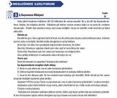

YİTurk tilini B2 darajasida o'rganish uchun mo'ljallangan dinleme matnlari to'plami.
Ushbu qo'llanma turk tilini B2 darajasida o'rganayotganlar uchun mo'ljallangan dinlash matnlari va mashqlarini o'z ichiga oladi. Kitobda turli kasbiy va hayotiy mavzulardagi intervyular, maslahatlar hamda tinglab tushunish qobiliyatini rivojlantiruvchi matnlar berilgan.